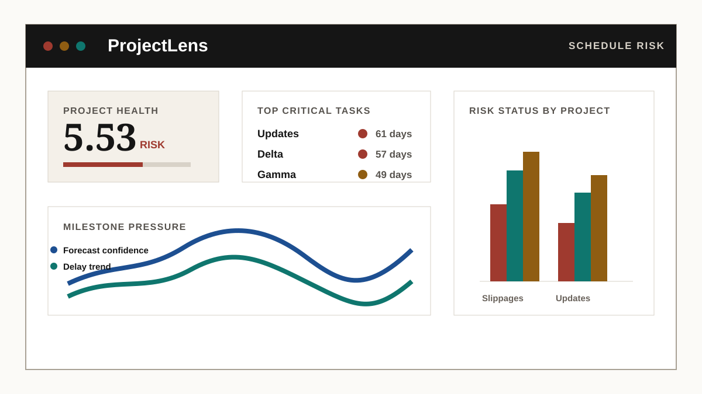

ProjectLens
PublicCompare a change pack with its schedule before the board meeting: the largest conflicts, source dates and a recorded response. Runs in the browser on bundled synthetic data or your own Primavera XER exports; files never leave the browser.
- One-click Northstar demo
- Pytest and Playwright suites in CI
- Boundaries stated in the README
- Problem
- Change packs and schedules disagree quietly before board meetings
- Outcome
- Compares the pack with the schedule and records the decision
- Proof
- Browser-local demo on Northstar + Riverside synthetic XER pairs; Playwright checks in CI
Open repoIn-browser demoTests in CI
PythonPlaywrightpandasGitHub Pages